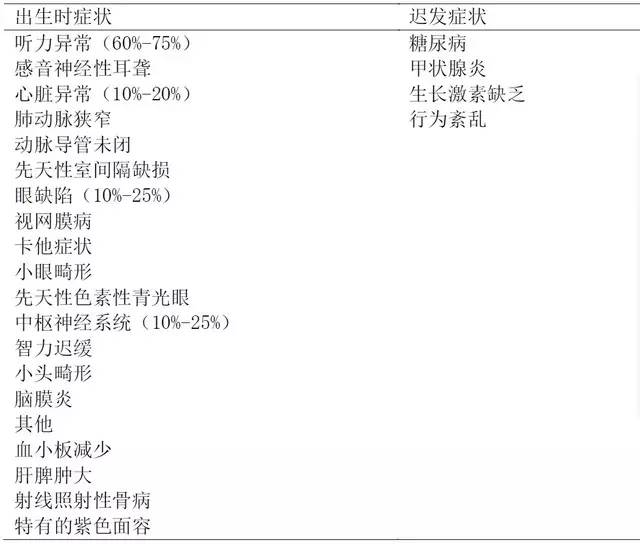
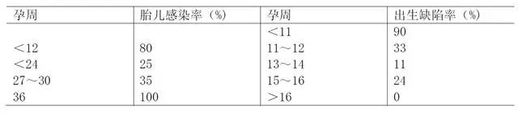
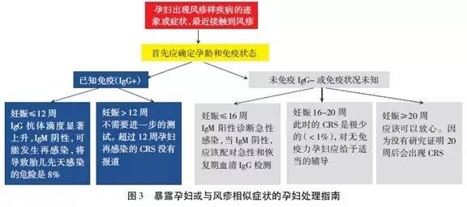
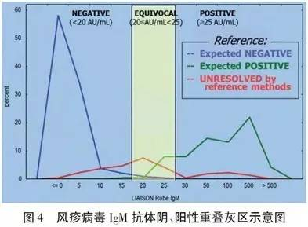
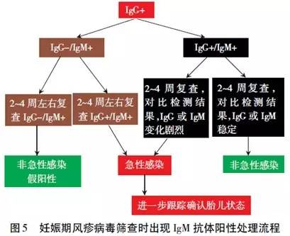

|
|
|


|
|
|||||||||||||
|
|||||||||||||
|
妊娠期 TORCH 筛查指南，TORCH问答（一）（1～26问）
发布时间：2019-5-5 15:45:25
一、TORCH 筛查的认识误区
问题 1：TORCH 筛查能诊断出生缺陷吗?
不能。TORCH 筛查是对孕妇感染的诊断，由此对胎儿有否感染及发育缺陷提供关注。筛查是在人群（孕妇）中筛选出某种疾病（病毒）的高危个体（感染者），对后者进行诊断（胎儿感染的诊断），对患者（胎儿）或疾病（病毒）携带者（孕妇）进行干预，达到预防和治疗目的。
问题 2： TORCH 感染的共同特征是什么?
1. 母婴传播，T1 期胎儿危险，T3 期新生儿危险。
2. 孕妇无症状或症状很轻。
3. 病毒可通过胎盘引起宫内感染，可引起早产、流产、死胎或畸胎等。
4. 病毒通过产道或母乳感染新生儿引起新生儿多系统、器官损害，智力障碍。
5. 孕妇感染，胎儿不一定感染，胎儿感染不一定造成出生缺陷。
问题 3： TORCH 感染差异性?
机体感染后，弓形虫、风疹病毒、巨细胞病毒和单纯疱疹病毒血清学变化各有不同（图 2），抗体变化也不同，需要定量检测抗体的变化程度才能做出正确的判断。
问题 4：TORCH 感染检测指标的临床意义有什么不同?
1. 直接指标（病毒抗原、病毒 DNA、病毒 RNA 病毒培养）检测的是病毒本身，与病毒的复制规律和潜伏位置等特性有关，适合于诊断。
2. 间接指标（IgG、IgM）检测的是病毒刺激机体后机体产生的免疫反应，与个体的免疫功能有关，适合于筛查和免疫状态评估。
问题 5：妊娠期感染分为几种?
妊娠期感染分为初次（原发）感染、既往感染、复发感染、再感染，其概念不能混淆。
1. 初次感染（primaryinfection）又称原发感染：妊娠妇女血清第 1 次出现病毒特异性抗体 IgG 阳性，而先前血清学试验是阴性称为初次感染。只有先前做过筛查，结果是阴性并存档（或保存孕妇血清标本），这样做才能判定初次感染。IgG 抗体亲和力测定在 IgG 阳性情况下，有助于区分出是急性初次感染，还是既往感染或复发感染，并对初次感染的时间做出估计，即若检测结果为高亲和力情况下，可以断定初次感染时间是在 3 个月前。
2. 既往感染（past infection）：曾经感染过该病毒，机体产生了抗体或病毒休眠以潜伏状态存在。
3. 复发感染（recurrent infections /secondary infection）：宿主免疫功能存在下的病毒间歇性排泄，是潜伏状态内源性病毒再激活。
4. 再感染（reinfections）：已经被免疫的个体接触到一个外源性新病毒，发生再感染。目前不能通过血清学方法区分复发感染和再感染，只能通过病毒分离和分子生物学方法。
5. 先天性感染（congenital infections）：病毒经胎盘传播的结果。母亲的初次或复发感染都可将病毒传播给胎儿，造成胎儿先天性感染。
问题 6：为什么筛查实验 IgG、IgM 应同时做?
筛查实验 IgG、IgM 应同时做，单做 IgM 往往给出错误的结果。IgM 阳性不能充分证明近期感染，部分人群感染后 IgM 可连续存在数年，单纯 IgM 阳性不能诊断。如以风疹非急性感染的 IgM 为例，究其原因可分为以下两种情况：
1.IgM 真阳性：这是由于有部分人发生感染后体内持续多年 IgM 表达，往往 IgM 水平保持较低的稳定水平，常伴有 IgG 阳性且亦保持稳定水平。此时试剂盒检测得到的 IgM 结果是正确的，但并不表示个体正发生急性感染，此时若单独只检测 IgM 则会造成误判。
2.IgM 假阳性：这主要是由于类风湿因子（RF）、交叉反应或者多克隆刺激等因素的影响导致试剂盒检测结果的错误，这是由于免疫学检测手段本身固有的限制所导致的，无法完全避免。
以上两种情况导致的非急性感染 IgM 阳性结果，则会给临床诊断带来困惑，因为这些个体并未正发生急性感染。但这一问题却可通过同时检测 IgG 且采用定量检测试剂而得到满意的纠正。在「2」的情况下，若初次检测结果为 IgM 阳性 /IgG 阴性，15 天 -1 个月后的第 2 次检测，则个体会依然保持此种情况或 IgM 转阴，即 IgG 不会发生血清学转换；若初次检测结果为 IgM 阳性或 /IgG 阳性，则 15 天 -1 个月后的第 2 次检测此两项指标数值方面往往不会发生较大变化，尤其是 IgG 会保持稳定，因为个体并未发生真正的复发感染。
问题 7：为什么妊娠期 TORCH 筛查具有时效性?
不同的病毒筛查目标不同，对筛查孕周的要求也不同，没有孕周，筛查结果往往没有意义。有些病毒在孕早期筛查有意义，有些在孕晚期筛查有意义。
问题 8：为什么抗体筛查没有绝对的参考值?
人体对病毒感染免疫反应不同，抗体水平存在很大个体差异。TORCH 病毒感染是一个母－胎动态过程，每个时间段没有截然标准， IgG/IgM 浓度切割值是感染指标，但具有局限性，个体浓度梯度变化才更有临床意义，例如当 IgG 上升 4 倍时常作为病毒复发或再感染的指标。
问题 9：为什么定量分析是 TORCH 筛查的进步和最佳选择?
1. 妊娠期发生初次感染或复发感染，体内产生 IgG 或 IgM 是一个急剧变化的过程，只有通过定量分析浓度变化才能检测到。
2. 定量分析有助于发现假阳性或假阴性结果。
3. 对于那些孕前未做过基础免疫状况评估的孕妇，选择两个时间点（T1，T2）检测 IgG 或 IgM 浓度（C1，C2），计算单位时间内浓度变化梯度，能有效地发现机体受到病毒攻击而发生的特异性免疫反应，但目前还没有参考值，较常用的是 C2 /C1 ＞ 4 倍。所有这些必须以定量检测为前提。
二、巨细胞病毒（CMV）筛查
问题 10：妊娠期为什么要做 CMV 筛查?
CMV 是宫内感染最常见的原因，在活产儿中发病率为 0.2%-2.2%。感染是感音神经性听觉丧失和精神发育迟滞的常见原因之一。
对孕妇进行筛查可以帮助医生了解孕妇的免疫状态，对 IgG 阴性的孕妇进行预防妊娠期感染的健康教育，并进行动态监测和观察，防止发生初次感染。对 IgG 阳性的孕妇在孕早期和孕晚期进行病毒 DNA 复制监测，防止复发感染通过胎盘造成先天感染，通过产道或乳汁造成新生儿感染。
尽管母亲有免疫力（IgG 阳性 )，婴儿也可能患先天性 CMV 感染。母亲初次感染和复发感染都可导致胎儿有症状的 CMV 感染。某些有免疫力的母亲其婴儿先天 CMV 感染导致中枢神经系统损伤。
对孕妇进行筛查可以帮助医生对孕妇感染类型做出诊断，以便选择在有效时间对胎儿进行产前诊断。做到早发现、早干预。
问题 11：如何诊断妊娠期 CMV 初次和复发感染?
人体初次感染 CMV 后，病毒进入休眠期并潜伏在人体内。这种病毒可以在人体内被重新激活，称为复发（继发）感染。此外，具有免疫力的个体暴露于外源性新的病毒株可出现再感染。因此，复发或再感染被定义为宿主免疫状态下病毒的间歇性分泌。这可能是由于内源性病毒的重新活化或宿主暴露于外源性新病毒株。复发感染和再感染不能通过血清学检测加以区分，只能通过病毒分离和分子生物学方法检测进行区分。美国 CMV IgG 阳性的健康女性 3 年内有 1/3 会再次感染 CMV 新病毒株。
妊娠期血清学方法诊断 CMV 初次感染：
1.IgM 阳性 + IgG 定量检测上升，15 天后转为阳性，发生血清转化 = 初次感染。
2.IgM 阳性 + IgG 低亲和力（≤ 16 周）= 初次感染。如果孕前的免疫状态未知，初次感染的诊断应基于特异性 IgM 抗体的检出。然而，10% 的复发感染病例中也可检出 IgM 抗体，并初次感染数月后血清中也可检出 IgM 抗体。因此，IgM 抗体阳性的人群可能包括孕前初次感染和复发感染两种情况，还有 IgM 抗体阳性长期持有造成的假阳性。IgG 抗体亲和力分析可帮助了解是否在 3 个月内发生 CMV 感染，即若检测结果为高亲和力，可断定初次感染是在 3 个月前发生，往往提示为既往感染; 若检测结果为低亲和力，则 CMV 初次感染在 3 个月内的可能性很大，往往提示为急性初次感染。病毒 DNA 的检测可帮助我们发现病毒复制，但不能区别是复发感染还是初次感染，只有 IgG 抗体阳性者，才能出现复发感染。
通常亲和力指数＜30%，则高度提示近期的初次感染（3 个月内）。因此，妊娠期初次感染的血清学诊断主要依据血清转化现象（之前血清反应阴性的孕妇出现特异性 IgG 抗体），或检出病毒特异性 IgM 抗体并伴随低亲和力 IgG 抗体。孕妇如在孕前血清中检出 IgG 抗体而没有 IgM 抗体，而妊娠期出现 IgG 抗体滴度的显著升高及高 IgG 亲和力（伴有或不伴有特异性 IgM 抗体的出现）可被认为是出现复发感染。
妊娠期非初次感染（复发和再次感染）的诊断：
1.IgM 阳性 + IgG 阳性 + 高亲和力（≤ 16 周）= 非初次感染的可能性增加。
2.IgG 阳性且 IgM 阳性 / 阴性 + 高亲和力（≤ 16 周）+ 尿 / 分泌物 / 血液中检出 CMV（分离病毒或 PCR）= 非初次感染。
3.CMV 特异性 IgG 上升 4 倍 = 非初次感染
问题 12：什么是 CMV 先天性感染？先天性 CMV 感染有哪些后果？
先天性感染是由于 CMV 经胎盘垂直传播。孕妇初次或者继发感染都可能垂直传播给胎儿。初次感染后，妊娠期宫内垂直传播的概率为 30%-40%，而复发感染后这种概率仅为 1%。但是 2009 年美国 CDC 发表的关于胎儿先天性缺陷的统计分析结果显示，妊娠期复发 CMV 感染率为 75%，CMV 感染导致的先天性缺陷占第 1 位。
其中妊娠期复发 CMV 感染占主要因素，对孕前感染率高达 95% 的中国孕妇更是如此。10%-15% 的先天性感染的婴儿会在出生时出现症状，包括宫内生长迟缓、小头畸形、肝脾肿大、淤斑、黄疸、脉络膜视网膜炎、血小板减少症和贫血。这些婴儿中 20%-30% 会死亡，这主要是由于弥漫性血管内凝血、肝功异常或细菌重复感染。大多数先天性 CMV 感染的婴儿（85%-90%）在出生时不会出现症状或体征，但这些婴儿中 5%-15% 会出现后遗症，如感音神经性听觉丧失、精神运动发育迟缓和视觉障碍。
问题 13：怎样进行胎儿 CMV 感染的产前诊断?
胎儿 CMV 感染的诊断应该基于羊水样本的培养和 PCR 检测。当孕妇被诊断为初次 CMV 感染时，应该在母体感染 7 周后并且在妊娠 20-21 周后进行羊膜腔穿刺术采集羊水进行实时定量 PCR 检测病毒 DNA 载量，因为只有胎儿感染 5-7 周后，经过肾脏病毒复制，分泌到羊水中的病毒量才可以达到检测限。根据以往很多文献报道，进行产前诊断操作的时间如果距离母体感染时间过近，其出现假阴性结果的风险不容忽视。
对于复发感染的病例（胎儿感染的风险较低）是否采取羊水病毒检测尚未达成一致意见。然而，根据文献报道，一些复发感染的病例也会出现严重的后遗症。因此，即使对于复发感染的病例，我们也可以考虑通过羊膜腔穿刺术对胎儿 CMV 感染进行产前诊断。
问题 14：为什么不推荐通过检测胎儿血 IgM 抗体或 DNA 对于胎儿感染进行诊断?
不仅是由于脐带穿刺风险较高，还由于许多 CMV 感染的胎儿只有在妊娠晚期才会出现特异性 IgM 抗体，这使得脐带穿刺检测的敏感性很低。妊娠 20-21 周，胎儿血 IgM 灵敏度为 50%-80%，胎儿血 DNA 灵敏度度 40%-90%，而羊水 DNA 特异性和准确性可达到 100%。
问题 15：为什么不推荐用孕妇血 CMV-DNA 检测初次感染?
因为检测初次感染孕妇血液中的 CMV-DNA 的阳性率为 33.3%，而 IgG 阳性健康妇女的血液中的 CMV-DNA 的阳性率也为 33.3%。所以用孕妇血液中 CMV-DNA 进行感染的诊断是不可靠的。
问题 16：胎儿诊断为 CMV 感染后如何处理?
由于 CMV 感染产前诊断局限于羊水检测（如病毒分离和 PCR），不能预测胎儿出生时是否会出现症状。所以一旦胎儿感染得到诊断，孕妇应每隔 2-4 周进行系列超声检查，以便发现 CMV 感染的征象，如宫内生长迟缓、脑室扩张、小头畸形、颅内钙化灶、腹水或胸腔积液、胎儿水肿、羊水过少或过多、肠管回声增强，这些发现可能有助于预测胎儿的预后。这种系统超声检查应在具有资质的产前诊断中心进行。胎儿高分辨率磁共振成像检查可能有助于预后的评估，特别是当超声发现有颅脑异常时。
然而，磁共振成像检查是否能为我们提供胎儿 CMV 感染的有效信息，还有待进一步确定。已有一些研究对于羊水中病毒载量作为一个预后指标的临床意义进行了报道，研究表明在有症状的胎儿中，羊水样本中 CMV-DNA 载量值要明显高于无症状的胎儿。然而，这两种群体中的载量值有很大部分的重叠。因此，羊水中 CMVDNA 的定量测定能否作为 CMV 感染的预后指标还有待于进一步证实。
三、风疹病毒（RV）筛查
问题 17：为什么希望怀孕的妇女在孕前接受抗体检测?
风疹，也称德国麻疹，属儿童期疾病。未妊娠时通常表现为轻微自限性疾病。然而怀孕时病毒对发育胎儿可能有破坏性影响，与不可预知的流产和严重先天畸形有直接关系。孕前接受抗体检测可了解机体对 RV 是否有免疫力，如果没有免疫力（IgG 阴性），可接种疫苗并于产生抗体后再怀孕。接种疫苗或自然获得的免疫一般可保护胎儿免受宫内感染。
问题 18：什么是先天性风疹综合征（CRS）? 最常见的先天性缺陷和迟发的症状?
CRS 代表出生前感染 RV 的新生儿症状，胎儿为多器官系统受累。RV 通过胎盘垂直感染对发育胎儿有很大危害，导致自然流产、胎儿感染、死产、胎儿发育迟缓。多数 CRS 患儿表现为持续性的神经运动缺陷，以后还可出现肺炎、糖尿病、甲状腺功能障碍、进行性全脑炎。最常见的先天性缺陷和后来出现的症状见表 3。
 表 3 风疹病毒感染出生时症状和迟发临床表现
RV 感染胎盘后，通过正在发育胎儿的血管系统扩散，引起血管细胞病变和发育器官局部缺血。胎儿感染率和出生缺陷率与母体感染时孕周有关，见表 4。
当母体感染 / 暴露发生在孕早期，胎儿感染率约 80%，晚中期降至 25%，后期又增加，从孕 27-30 周感染率为 35%，至孕 36 周后感染率几乎 100%。孕 11 周前感染先天缺陷率为 90%，孕 11-12 周为 33%，孕 13-14 周为 11%，孕 15-16 周为 24%，孕 16 周后为 0。所以，母体感染后发生先天缺陷风险局限在妊娠 16 周前，孕 20 周后感染引起 CRS 的风险很小，孕后期感染唯一的后遗症可能是胎儿发育迟缓（FGR）。受精前后母体感染也不增加 CRS 风险。所以有关胎儿风险和处理的咨询必须个体化。
接种疫苗或自然获得的母体免疫一般可保护胎儿免受宫内感染，然而也有母体再次感染患 CRS 的报道。所以，有先天性感染临床症状的胎儿或新生儿应考虑 CRS 的可能。孕 12 周后母体再感染时无 CRS 病例报道。
 表 4 孕期风疹病毒感染与胎儿感染和出生缺陷的关系
问题 20：如何诊断母体 RV 感染?
准确诊断妊娠期原发性 RV 是必须的，需要血清学试验，因为很多病例是亚临床表现。通过血清学方法测定 RV 特异性 IgG、IgM 是一种简便、敏感、准确的方法，诊断如下：
1. 急性和恢复期血清样本 RV IgG 抗体滴度增加 4 倍。
2.RV 特异性 IgM 抗体阳性。孕妇血 IgM 阳性同时还要有血清学转换指标，即出现 IgG 由阴性转变成阳性。或者孕妇血 IgM（+）同时还要出现 IgG 抗体连续双份血清出现 4 倍增高（15 天 -1 个月间）。
3.RV 培养阳性（患者临床样本的病毒分离培养）。血清学试验最好在皮疹出现的 7～15 天内检测，2-3 周后重复检测一次。
问题 21：可以诊断胎儿 RV 感染吗?
目前还没有成熟稳定的诊断方法。有少量报道 RV 特异性 PCR 检测 CVS 样本用于宫内 RV 的产前诊断。该报道证实绒毛样本优于羊水样本，因为绒毛可在孕早期 10-12 周取材，而羊水需要在孕 18-20 周取材，脐血需要在孕 28 周取材，此时检测胎儿感染已没有太大意义了。超声诊断 CRS 极其困难，生物测量有助于诊断 FGR，但不是诊断 CRS 的好工具，因为 RV 引起的畸形性质不同，表现出生长迟缓的胎儿应该考虑是否有先天性病毒感染，包括 RV。
问题 22： 孕妇出现风疹样疾病的迹象或症状，最近接触到 RV 怎么办?
孕妇 RV 暴露时必须依据暴露时孕周、免疫状态进行个体化处理。确诊孕妇急性 RV 感染经常是很难的，临床诊断不可靠，大量病例是亚临床表现，并且临床特征与其他疾病非常相似。图 3 显示对暴露孕妇或与风疹相似症状的孕妇的处理指南。如果孕妇有与风疹类似症状或近期暴露于 RV，应该确定孕周和免疫状态。
对暴露于 RV 5 周后或出现皮疹 4 周后就诊的孕妇，诊断很困难。如 IgG 抗体阴性，那么患者对 RV 敏感。因此，没有近期感染的证据。如果 IgG 抗体阳性，说明以前有感染，这时抗体水平低，提示是远期感染，但确定感染时间和胎儿感染风险很难，建议测定 IgM 或重复测定 IgG 抗体，了解是否有显著的升高或下降。

问题 23：怀孕时能否接种疫苗？孕早期不小心接种疫苗或接种后立即怀孕了需要终止妊娠吗？
风疹疫苗接种禁忌证有发热、免疫缺陷、新霉素过敏和怀孕。风疹疫苗病毒可能通过胎盘感染胎儿。但是，对孕早期不小心接种风疹疫苗的孕妇其子代患有 CRS 的病例还未见报道。所以对这样孕妇不建议终止妊娠。根据疫苗对胎儿的潜在风险，建议妇女接种后 28 天再怀孕。
问题 24：为什么妊娠期只筛查 RV IgM 抗体会得出错误的结果?
因为会出现非急性感染阳性，其原因主要有两方面：
1. 真阳性：患者持续多年 IgM 表达，往往 IgM 水平保持较低的稳定水平，常伴有 IgG 阳性。
2. 假阳性：检测方法的特异性受限。RV IgM 抗体参考值范围的确定由已知阴、阳性标本确定的。如图 4 所示，红线下方区域是交叉重叠区，是不能用参考方法解释的区域，大约有 3%-5% 的会出现 IgM 假阳性问题，如果不用定量的方法我们不能区分真假阳性。造成这种情况的原因主要是 RF 干扰、交叉反应、多克隆刺激等。
 推荐 3-7.
问题 25：妊娠期风疹病毒筛查时出现 IgM 抗体阳性应如何处理?
妊娠期风疹病毒筛查 IgM 抗体阳性可按图 5 流程处理。

问题 26：为什么说预防是避免 CRS 的最好策略?
孕妇 RV 感染对发育胎儿有破坏性影响，预防的关键是所有婴儿普遍接种疫苗，并对孕前筛查妇女中高危人群给予免疫接种。尽可能诊断出感染病例。妊娠早、中期，包括 IgG 阳性孕妇尽可能避免接触 RV。对发生在 16 周之前的原发感染，应该向孕妇提供咨询，告知垂直传播的风险和提供终止妊娠的建议。但是，对于感染的胎儿没有宫内治疗方法。因此，预防仍然是避免 CRS 的最好策略。
（未完，待续）
来源：中华检验医学网 |
|